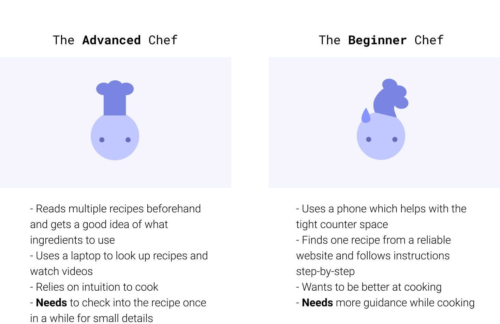
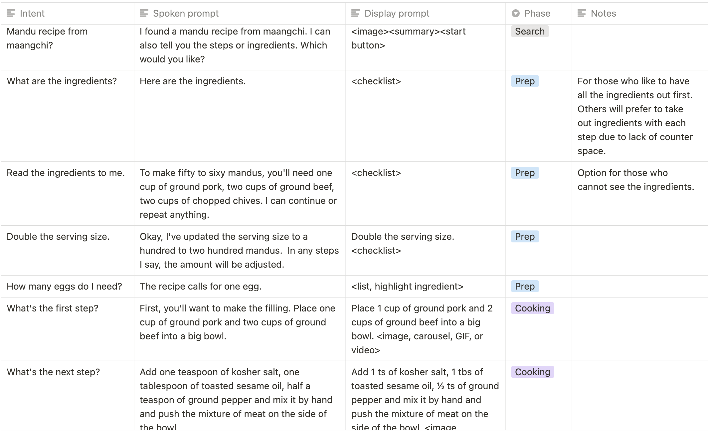

Background
I was a college student not too long ago trying to figure out how to make food. I read recipes, bought ingredients,
and tried my hand at making good food. Sometimes it was successful; sometimes it wasn’t. While learning more about
conversation design, I thought this situation made for a fascinating VUI challenge, where users are multi-tasking,
busy with their hands, and in need of a flow of information.
Is conversation design the right fit?
Checklist from the Google Design Guidelines.
✓ Users already have human-to-human conversations about this task or topic.
The interaction is brief with minimal back-and-forth dialog.
✓ Users would have to tap multiple times to complete the task with a screen.
✓ Users might have to navigate multiple apps or widgets to complete the task with a screen.
The feature is difficult or cumbersome to find.
✓ Users can do this while multi-tasking.
✓ Users can do this while their eyes or hands are busy.
✓ Users feel comfortable typing or talking about this topic.
Understanding the User
First sample dialog + WOz prototyping
I first wrote a sample dialog
to understand how users might interact with a voice assistant while cooking. I tried it out while a friend and I cooked mandu, a Korean-style dumpling.
I looked for places of friction and pain points
to tackle in my next script. I quickly found out many of the assumptions I made were wrong and I missed a lot of things, but I
learned a lot in the process. Failure is a great teacher.
User interviews
I interviewed 5 college students and recent grads on how they approach using recipes to cook. I chose college students because they
are often in a phase of life where they are cooking for themselves for the first time in their lives. Some quickly became expert chefs
and some continue to struggle to cook a decent dish. (I'm in the latter group.)
Insights
From interviews
- Learning to cook can be a visual task, especially when following along Youtube videos. This would pose a challenge to
design voice-first.
- Users are cautious of food waste and enjoy social cooking
- Users have to scroll their devices to read recipes and cook at the same time
- Users value efficiency and don’t want to take too long to cook
Personas
From the research, I created two personas from patterns that I saw within the users. The two personas have two
different needs; thus, I needed to design for both ends.

Problem Statement
How might we utilize voice technology to reduce friction while cooking?
Iterating on sample dialogs
I rewrote the script based on my new findings and added where the
conversational and visual components would be. I also wrote responses in case of an unrecognized intent.

Example flows
The standard flow is ideal for the basic chef walking through each step of the recipe. It's not enforced that users have to follow this flow and thus,
advanced chefs can use the voice assistant questions about specific ingredients at any time. Users can also ask for a list of ingredients.